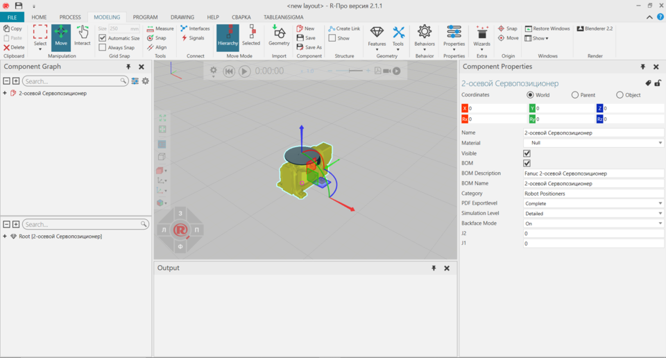

The Modeling view allows you to model new and existing components.

Contents ShowHide
To access the Modeling view:
The Modeling view shows, by default, the following panels:
The context of the Modeling view is component modeling.
You can:
By default, the following commands are shown in the Ribbon when you click the Modeling tab.
| Name | Description |
| Align | Aligns a selected object using two points. Additional options are
displayed in a task pane.
Settings Snap Type |
| Always Snap | Turns on/off the automatic snapping of a selected object along an axis or plane at intervals when using the manipulator. |
| Automatic Size | Turns on/off the automatic calculation of intervals for snapping a selected object along an axis or plane when using the manipulator. |
| Behaviors | Displays a list of behaviors that can be created in a selected node. |
| Copy | Copies the current selection to the clipboard. |
| Create Link | Creates a new child node in a selected node. |
| Delete | Deletes the current selection. |
| Features | Displays a list of features that can be created in a selected node. |
| Geometry | Imports the geometry of a supported file. Additional options are displayed in a task pane, see Import Model Settings. |
| Hierarchy | Allows a selected object and its hierarchy to be moved together when using the manipulator. |
| Interact | Allows the pointer to jog joints and other interactive properties of objects in one or more degrees of freedom in the 3D world. |
| Measure | Measures the distance and/or angle between two points in 3D world.
Additional options are displayed in a task pane.
Mode Settings Snap Type Tip: The results of a measurement are sent to Output panel. |
| (Manipulation) Move | Allows a selected object to be moved along an axis or plane, rotated around an axis, and snapped and aligned to a point in 3D world. |
| (Origin) Move | Allows the point of origin in active component to be moved in 3D
world. Additional options are displayed in a task pane.
Apply |
| New | Creates a new component in the 3D world. |
| Paste | Adds the contents of clipboard to active area or field of workspace depending on data type. |
| Properties | Displays a list of properties that can be created in the root node of active component. |
| Restore Windows | Restores the workspace of current view to its default setting. |
| Save | Saves the active component to an existing file, otherwise a new file. |
| Save As | Saves the active component to a new file. |
| Select | Allows for direct and indirect selection of features in the 3D world
using listed commands.
Rectangular
selection Free-form selection Select all Invert selection |
| Selected | Allows a selected object not its hierarchy to be moved when using the manipulator. |
| (Structure) Show | Turns on/off the visual node structure of an active component in 3D world, including joint offsets and degrees of freedom. |
| (Windows) Show | Displays a list of panels that can be shown/hidden from the current view of workspace. |
| Size | Defines the interval for snapping a selected object along an axis or plane when using the manipulator. |
| (Origin) Snap | Allows the point of origin in active component to be snapped to a
location in 3D world by using one to three points. Additional options are
displayed in a task pane.
Mode Settings Snap Type Apply |
| (Tools) Snap | Allows a selected object to be snapped to a location in 3D world by
using one to three points. Additional options are displayed in a task
pane.
Mode Settings Snap Type |
| Tools | Displays a list of tools for editing nodes, features and geometry.
Split Invert Merge Merge faces Collapse Slice Select Identical Remove Holes Component Link Decimate Cylindrify Blockify Assign Add Decal Mapping |
| Wizards | Displays a list of wizards for executing automatic operations.
Action Script Convex Hull Conveyor Count Triangles End Effector IO-Control Machine Wizard |